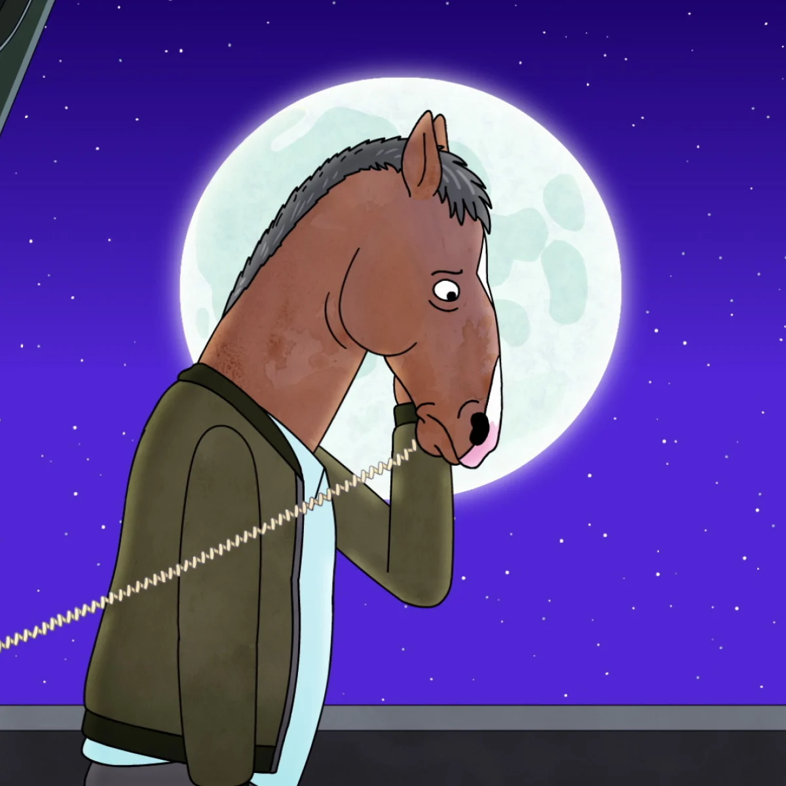
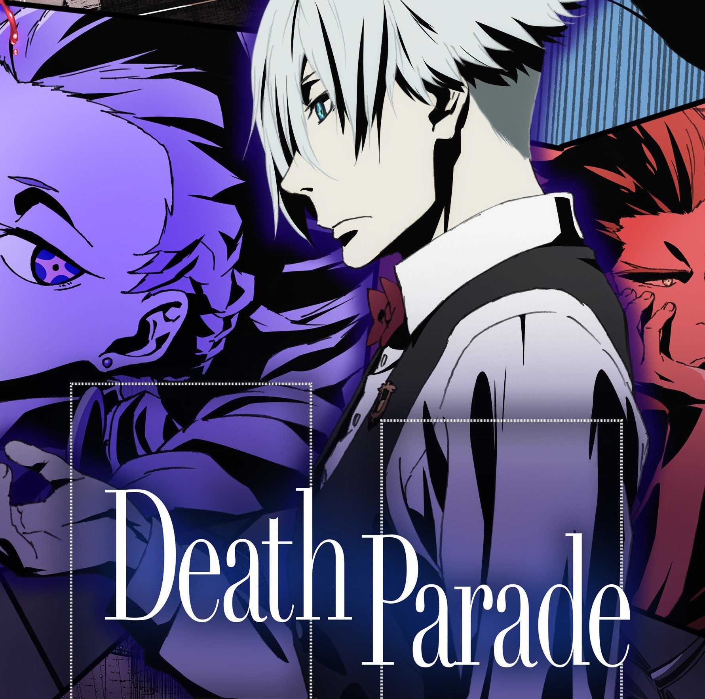
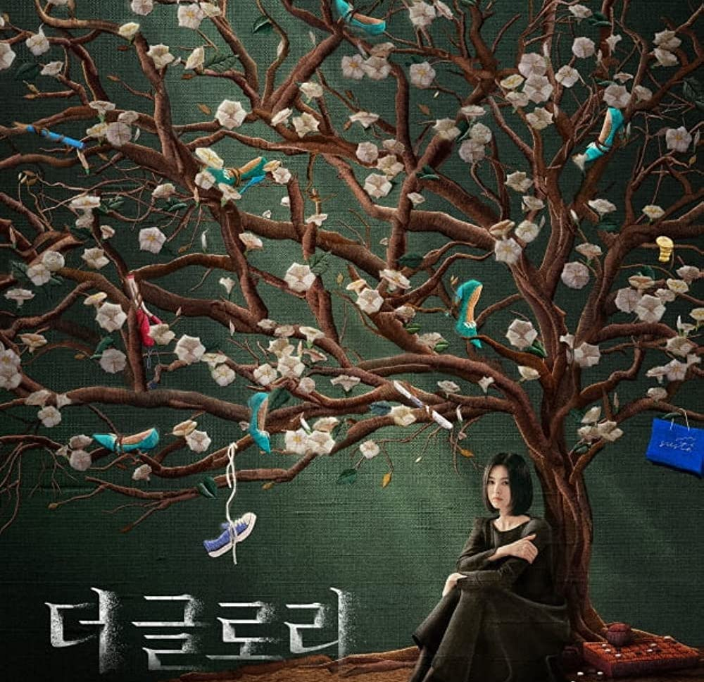
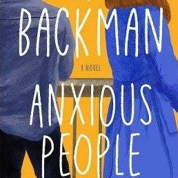

Dive into my inner world
(through various pieces of media)
Cartoon that makes you rethink your life purpose

What if I told you that the best tv-series of all time (in my opinion) is a tv-series about a world, where animals are humanised?Where the main character is a horse?It sounds silly, but the topics they raise are far from it.The main one being depression and a purpose of life.Do we really have one, and does anything really matter when we are tiny specks in this vast universe?
March 30th,2023
Have you ever wondered what happens after you die?

I have to admit, I am a fan of anime. There is a prejudice that anime is for kids, but I would strongly disagree with that.”Death Parade” for example, provides its own idea of how people’s fates are decided after death.Do they go to hell or heaven?And who decides that?If your fate is in hands of someone up above, then how do he/she decides that?Maybe by making you play your last game.
March 24th,2023
Do victims of bullying ever recover and move on?

Watching “The Glory” made me think deeply about it. This story is about a victim of the worst high-school bullying case, a girl named Dongeun.I admired her perseverance and strength through this whole ordeal.It makes you think about all of the real life cases of abuse in general.Do victims ever get to live a normal life?Or do they carry their pain with them wherever they go?
March 19th,2023
A tv-series that makes you feel good about yourself
There’s no doubt in my mind that “Schitt’s Creek” is the best comedy tv-series of all time.It has everything:it makes you laugh,cry and cheer for the characters through all the 6 seasons.The character growth they go through is tremendous.It makes you believe that you also have a chance to change and turn your life around.
March 10th,2023
Do we all have the same struggles?

If someone asked me what book I would take with me to a remote island, I would say “Anxious people” by Fredrik Backman.My electronic copy of the book has so many highlighted quotes, that if I read them all out loud you would probably think I am reciting the whole novel to you!My favorite quote from the book is this one: “This story is about a lot of things, but mostly about idiots. So it needs saying from the outset that it’s always very easy to declare that other people are idiots, but only if you forget how idiotically difficult being human is.”
February 26th,2023
Let's connect!